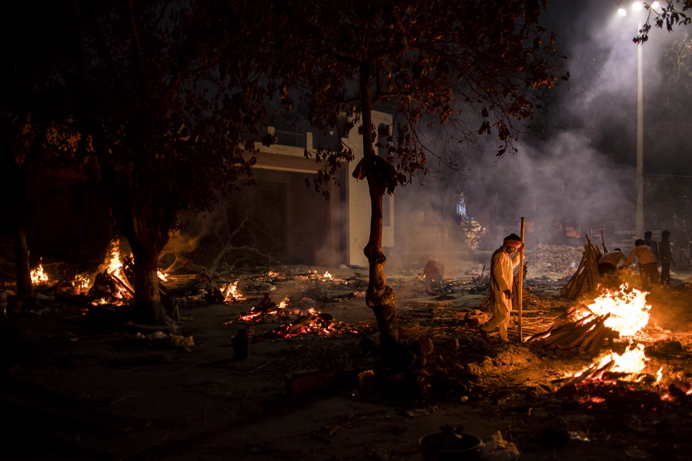
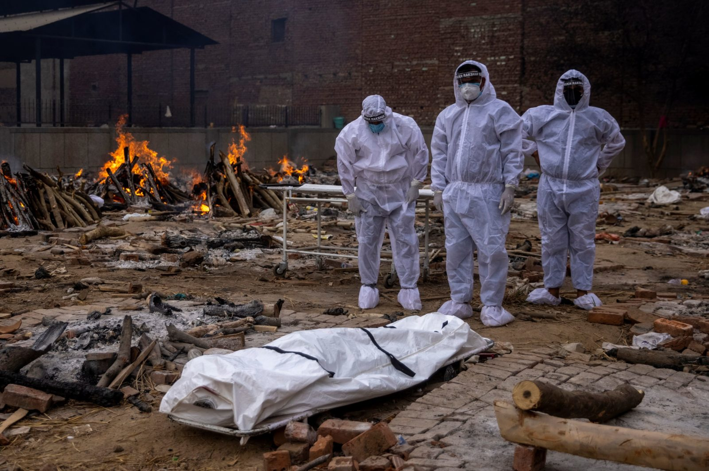
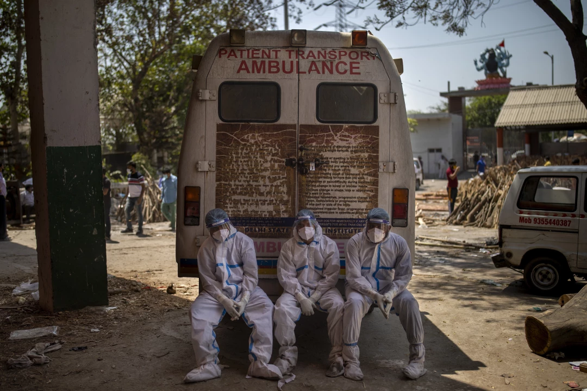

Devastation By The Delta Variant

India had a shockingly large second wave of coronavirus disease 2019 (COVID-19) in 2021. In addition to the spread of the virus into the hinterlands, largely unserved by large hospitals with intensive care facilities, the severe acute respiratory syndrome coronavirus 2 (SARS-CoV-2) appears to have acquired new characteristics that contributed largely to its rapid and devastating spread across the country.
Story of the second wave
Soon after the first detection of the virus in India, within just two weeks of the official declaration of COVID-19 as a pandemic by the World Health Organization (WHO), a national lockdown was declared that lasted for over two months. At that point, there were just over 500 cases in the whole country, with a population of over 1.3 billion. After June 1, 2020, a phased relaxation of the lockdown was implemented, though with wide local variations from state to state. However, case counts continued to rise till the peak on September 16, but the doubling time declined dramatically, as did the case fatality rate. Once the peak was passed, case incidence went down to below 10,000 new cases a day by February 2021. However, many seroprevalence studies indicate this to be a massive under-ascertainment on the order of 6% of total cases. Around this time, political rallies, electioneering crowds, religious festivals, and some social events were held, reflecting the gung-ho mood among the top officials who claimed that the pandemic was in its “end-game.” While both the Oxford-AstraZeneca and the indigenous Covaxin vaccines were being put through their clinical trials, operational guidelines were being discussed to implement vaccination on a national basis. With the healthcare workers being the first group to receive the vaccine, the campaign was flagged off on January 16. Still, the pace was slow, covering less than 1% of the country over the next month (note: this means approximately 8.7 million doses), and by April 1, 2021, over 5% of the population, with one dose. In February 2021, however, Maharashtra, Chattisgarh and Punjab noted a sharp increase in cases, and the reproduction number for the whole country went above 1, indicating a burgeoning pandemic on the fourteenth of the same month. No national-level lockdown was mandated until April 14. By this time, India had undergone a trial by fire, with acute oxygen shortages, no hospital beds, and deaths exceeding the capacity of the system to decently dispose of the corpses. Though the official toll is horrifying enough, many sources suggest that it is a gross undercount, and the actual numbers may never be known.
Deadly delta variant

About the beginning of the second wave, many VOCs were found to have been introduced into the country. The delta variant became the dominant strain, making up over 99% of all sequenced genomes by the end of April 2021. It is associated with resistance to antibody-mediated neutralization, similar to the beta variant B.1.351. The delta variant is also likely to be more transmissible than the alpha variant B.1.1.7. In Maharashtra, where the caseload has been the highest and where an abundance of data is available, this VOC rose from forming 1.5% of the total to 87% over February to May 2021. Using a two-strain model, the researchers combined mortality data with genomic distribution data downloaded from the Global Initiative for Sharing All Influenza Data (GISAID) database. Despite the vast scale of uncertainty about the infection fatality ratio (IFR), the model suggests that if only 50% of deaths are assumed to have been missed, according to them a very conservative assumption, and if the IFR is assumed to be 0.25%, the number of deaths due to the delta variant increased from 15% to 83% from April 1 to May 15, 2021. Overall, during this period, 55% of deaths were caused by this VOC. The scientists concluded that the delta strain is much more transmissible than any other previous lineage. Therefore, this supports the idea that the size of the second wave is not only because of waning immunity or relaxation of non-pharmaceutical interventions (NPIs) but the change in virus transmissibility and susceptibility to neutralizing antibodies.
Higher case and death numbers in second wave
.png)
The ratio of standardized daily case rates in every state and union territory in India shows a value above 1, and a median value of 3.8, indicating that wave 2 hit the country much harder than wave 1. The highest ratios were in Uttarakhand and Himachal Pradesh, followed by Punjab and Gujarat. When it comes to the ratio of standardized death rates, the same trend prevails, with only two states reporting a ratio below 1, while the death rates were significantly higher in the second wave for all other regions – the median ratio being 3.2. However, the worst-hit states have a ratio of 6.6 to 8.4. The peak distribution of cases also varied in the first wave from that seen in the second wave. In the former, the earliest peak was towards the end of July 2020, for the southern state of Tamil Nadu, while Himachal Pradesh recorded the latest, on November 29. For wave 2, the Himalayan territory of Ladakh recorded its peak on April 17, 2021, while Mizoram peaked on May 30. The majority of states had many more cases and deaths in the second wave, while peak deaths in wave 2 were four times that of the first wave.
The Fallen
How India’s COVID-19 crisis leaves a trail of death and misery
How many have died of COVID-19 in India? This is a very hard question to answer. The 220,000 recorded deaths (as of May 3) are a terrible catastrophe in themselves. But multiple reports from around the country confirm that the recorded fatalities are not the whole story. International data also indicates that given India’s population and the extent of disease spread we should expect many more deaths.
Even in the midst of this calamitous second wave, counting the dead is important. Low recorded COVID-19 mortality during the first surge fed government narratives on the successful handling of the epidemic, and these, in turn, might explain the complacency which preceded the devastating current surge. Arriving at credible estimates of the epidemic’s true toll could be key to mitigating further disaster.
What we learn from reports in the media
Media reports have told us of big discrepancies in official data, of graveyards running out of space, of temporary cremation grounds, and of shortages of wood to fuel the burning pyres. We have seen page after page of obituaries from cities officially recording just a few deaths from the coronavirus.We cannot reliably infer the scale of India’s unrecorded coronavirus deaths from such reports. But they provide some valuable lessons.The first lesson is that undercounting is widespread.
Reports of fatality undercounting have emerged from West Bengal, Delhi, Tamil Nadu, Maharashtra, Madhya Pradesh, Gujarat, Telangana, Uttar Pradesh, Assam, Odisha, Kerala, Karnataka, Bihar, Haryana, and Chhattisgarh. These states make up around 80% of India’s population.Although most reports focus on urban areas, a few describe major undercounting in rural areas. Some states seem to be worse offenders than others, but almost certainly the problem is nationwide. Where such reports have not emerged, local media may simply have lacked the resources or motivation to pursue these stories.
Highly variable death rates
In some regions, serosurvey data, along with the death toll, can be used to estimate the local “infection fatality rate” (IFR) of COVID-19: the fraction of all SARS-CoV-2 infections which have resulted in death. This is a crucial quantity – after all, we want to know our chances of dying if infected with the virus.But using recorded deaths risks grossly underestimating death rates. Even the ICMR acknowledged these risks when it chose to ignore fatality data from districts reporting very few deaths in its estimates of national IFR after the first national serosurvey.To remind ourselves of the limitations of official data, let us refer to IFR estimates based on recorded COVID-19 deaths as ‘naïve’. We find huge variability in naïve IFR estimates from different locations. For example, it would seem that Chhattisgarh’s naïve IFR was more than ten times greater than Bihar’s. This result is even more astounding since there are no demographic differences or other obvious factors which could account for such a divergence.Abandoning the highly implausible position that people in Bihar were much more resilient to the disease than in Chhattisgarh, the obvious conclusion is that death surveillance was much weaker in Bihar.There are also major variations in apparent death rates between urban and rural areas. India’s national serosurveys are consistent with a story of ‘missing’ rural deaths. The period between the second and third national serosurveys (roughly from September to the end of 2020), saw very substantial rural spread. Even as the pandemic slowed in the cities and the country’s total case-load declined, rural seroprevalence jumped to 19% from 5.2%. Nationwide, total infections tripled during this period, but recorded deaths only doubled, pulling the country’s naïve IFR down to 0.05% from 0.08%.Was this drop in IFR real? Or does it reflect weak rural death recording? Case studies from rural areas suggest the latter: for example, the Dainik Bhaskar newspaper recently reported a tragic surge in COVID-19 deaths in Belkheda village in Madhya Pradesh, almost all of which went unrecorded. With the spotlight on larger urban areas, we have to wonder just how many deaths in smaller towns and villages went unreported during India’s first wave.
India is facing one of the worst COVID-19 outbreaks in the world, buckling the country’s weak healthcare system and overwhelming the nation’s ability to cremate and bury its dead.
The world’s second-most populous nation recorded 379,257 new cases Thursday, a daily record for any country since the coronavirus first emerged more than a year ago. It also reported 3,645 deaths, the most in a single day in India. The actual numbers of infections and deaths are believed to be significantly higher.
The outbreak is being blamed on a so-called double mutant variant of the coronavirus that’s believed to be highly infectious. A vaccine drive has sputtered due to limited doses.India’s leaders had earlier boasted of defeating the virus after the country of 1.4 billion reported only a few thousand cases in January. That led to relaxed social restrictions and mass gatherings at cricket matches, election rallies and religious festivals that experts say became superspreader events.
Overcrowded health facilities are now turning away sickened patients, many of whom are dying outside hospital gates. People are scrambling to buy oxygen tanks, one of the most valuable commodities in India as a result of the outbreak.
The number of COVID-19 victims has so overwhelmed the country that furnaces in some crematories have begun to melt. Family members have had to cremate their loved ones in parking lots and along roadsides. Firewood is rationed and sparse in some places because of the abundance of funeral pyres.